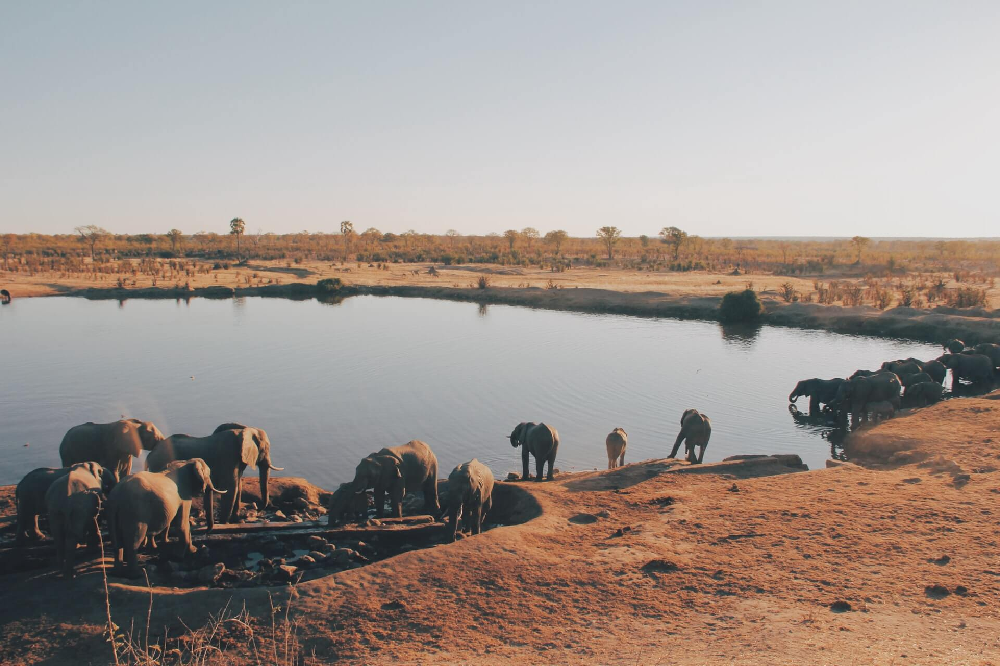

Welcome!
This site aims to boost awareness of the incredible experience of authentic African Safaris.
Not only is this an amazing adventure to embark on, but every time you visit and support a Game Reserve, the funds raised from your stay contributes to the ongoing preservation of African Wildlife through ethical conservation.
-Click a Country below for more info-
Population:
Capital City:
Int. Dialling Code:
Local Currency:
Time-Zone:
[Info supplied by REST Countries API]

Where nearly 2 million hectares of unrivaled diversity of life forms fuses with historical and archaeological sights - this is real Africa.
The world-renowned Kruger National Park offers a wildlife experience that ranks with the best in Africa.
Steeped in legend and history, the iconic Kruger National Park in South Africa is waiting for you to explore its vast landscapes and spectacular African wildlife.
Plan your Kruger Park safari trip from our recommended safari tour options, which range from exclusive private safaris to affordable group safaris. Take a journey of exploration to find Africa's Big Five : Elephant, Lion, Rhino, Leopard and Buffalo, you will discover unique wildlife on a real safari in Africa.
[Excerpt from Official Park Website. ]
Tembe Elephant Park offers intimate encounters with some of the largest elephants in Africa.
The 300km2 reserve, located in the Republic of South Africa between Kwa-Zulu Natal and Mozambique, is the ancestral home of the Tembe tribe who own and co-manage both the Park and the Tembe Elephant Lodge.
[Excerpt from Official Park Website. ]
Shamwari Private Game Reserve is a luxury safari and game lodge destination in South Africa’s ecologically and culturally significant Eastern Cape Province.
At the pinnacle of private game reserves, you will find Shamwari (meaning “my friend” in Shona) Private Game Reserve in the Eastern Cape, South Africa – home to the coveted Big 5 and luxurious experiences. It’s a place where guests can exist in harmony with nature, however fleeting the moment, where wildlife roam the landscape under the relentless African sun at one of the best Eastern Cape Game Reserves.
Shamwari has 7 lodges and 1 explorer camp; each providing distinct experiences. From exclusive tranquility, effortless family enjoyment or the back-to-nature appeal of a luxury tented camp. We invite you to come and experience wild Africa at Shamwari, one of the best Private Game Reserves in South Africa.
[Excerpt from Official Park Website. ]
Chobe National Park is a true wildlife paradise and one of the best national parks in Southern Africa. Just one peek at the variety of wildlife and lush vegetation and you will be mesmerized forever!
The gateway to Chobe is Kasane, a small town near the borders of Zimbabwe, Zambia and Namibia. Kasane accommodation offers hotels, tented camps and luxury lodge accommodation.
Chobe National Park is extremely lush because of the many waterways. The Chobe River flows through the park and draws many animals and birds during the dry season.
[Excerpt from Official Park Website. ]
Visiting the kalahari desert of central kalahari in Botswana. This is the largest and by far the most remote reserve in southern africa. It covers and area of 52000 sqaure km and makes the central kalahari the second largest reserve in the world.
There are five reserves that was set aside as part of the Kgalagadi or Kalahari desert of Botswana.
The vastness of the kalahari desert of Central Kalahari is overwhelming on your first visit and every visitor should be well prepared on their visit to Central Kalahari. Knowledge of the park is important and well maintained and equipped vehicles are recommended on your visit to Central Kalahari.
[Excerpt from Official Park Website. ]
A 100 years after explorer David Livingstone called this land ‘country full of rivers’, the environment and wildlife in the Moremi area were under threat. It is because of the bold, local Batawana people that this area was proclaimed Moremi Game Reserve in 1963, making Moremi the oldest and first protected reserve of the Okavango Delta.
As a sign of gratitude, the reserve is named after Batawana tribe members, Chief Moremi III and his wife. Now, the Moremi Game Reserve is one of the most diverse reserves with surprises everywhere, even for the most seasoned Africa-travelers.
A striking number of wildlife species, birdlife and a diverse landscape; combining mopane woodland, floodplains, fairytale like lagoons, papyrus rivers and acacia forests. There is no other place in Africa where so many ecosystems seamlessly coalesce.
[Excerpt from Official Park Website. ]
Etosha National Park is unique in Africa. The park’s main characteristic is a salt pan so large it can be seen from space. Yet there is abundant wildlife that congregates around the waterholes, giving you almost guaranteed game sightings.
At the same time Etosha National Park is one of the most accessible game reserves in Namibia and Southern Africa.
The park is malaria free, accessible in a regular sedan car and the rest camps provide a range of accommodation as well as restaurants, viewing decks, shops and petrol stations. Luxurious camps in Etosha’s remote areas have now added top end accommodation to the park’s offerings.
[Excerpt from Official Park Website. ]
The Skeleton Coast Park, is now acknowledged as one of Namibia’s greatest treasures, in that it is one of the world’s last great wildernesses.
nitially proclaimed in 1971, in its present form in 1973, extends from the Ugab River in the south for 500 km to the Kunene River in the north and about 40 km inland. Dense coastal fogs and cold sea breezes caused by the cold Benguela Current add atmosphere to the windswept beaches that are littered with shipwrecks, bones and other debris.
[Excerpt from Official Park Website. ]
Wilderness is indeed the Khaudum’s comparative advantage. The park, situated in north-eastern Namibia bordering Botswana, has less than 3 000 visitors annually and there are few tracks through the deep Kalahari sand.
More elephants than people are seen around the park. It is a refuge for African Wild dog and Roan antelope, Lion, Cheetah and Leopard are also found here.
The park is unfenced except along the Botswana border, so game are able to move freely between neighbouring conservancies and small scale farms. Hence, Park staff co-operate with the conservancies in the joint management of the wildlife.
[Excerpt from Official Park Website. ]
Maasai Mara (Masai Mara) is situated in south-west Kenya and is one of Africa’s Greatest Wildlife Reserves.
Together with the Serengeti National Park in Tanzania it forms Africa’s most diverse, incredible and most spectacular eco-systems and possibly the world’s top safari big game viewing eco-system.
The Great Wildebeest Migration is not to be missed!
[Excerpt from Official Park Website. ]
Crowned by Mount Kilimanjaro, Africa's highest peak, the Amboseli National Parks is one of Kenya's most popular parks.
The name "Amboseli" comes from a Maasai word meaning "salty dust", and it is one of the best places in Africa to view large herds of elephants up close. and possibly the world’s top safari big game viewing eco-system.
Nature lovers can explore five different habitats here ranging from the dried-up bed of Lake Amboseli, wetlands with sulphur springs, the savannah and woodlands. They can also visit the local Maasai community who live around the park and experience their authentic culture.
[Excerpt from Official Park Website. ]
On the floor of the Great Rift Valley, surrounded by wooded and bushy grassland, lies the beautiful Lake Nakuru National Park.
Visitors can enjoy the wide ecological diversity and varied habitats that range from Lake Nakuru itself to the surrounding escarpment and picturesque ridges.
Lake Nakuru National Park is ideal for bird watching, hiking,picnic and game drives.
[Excerpt from Official Park Website. ]